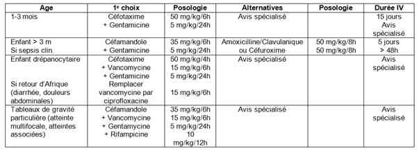
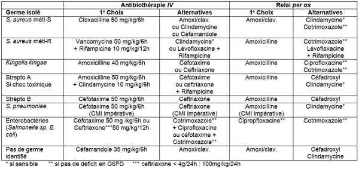
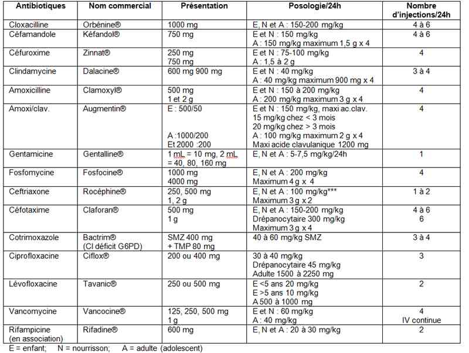
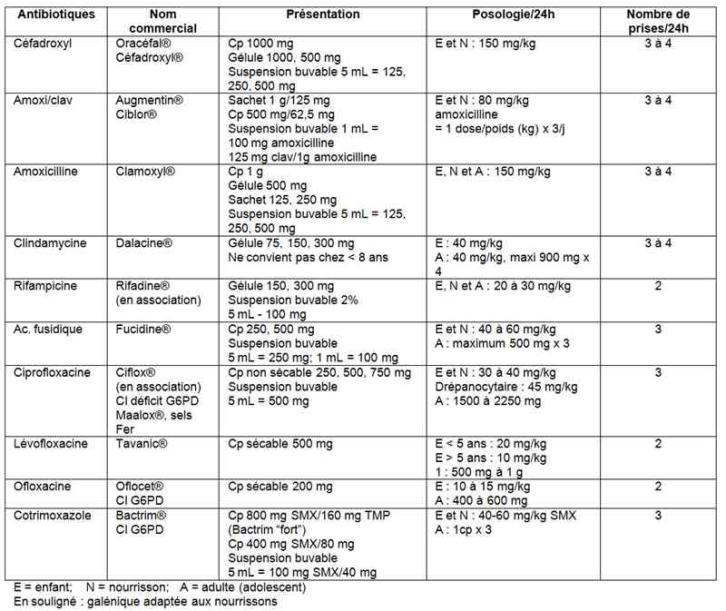
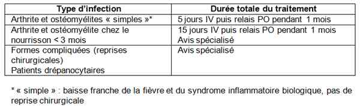

Bienvenue Sur Medical Education
Ostéomyélite/arthrite aiguë de l'enfant
EnfantSpécialité : infectieux / p√©diatrie /
Points importants
-
Fièvre et impotence fonctionnelle (boiterie) constituent les signes cliniques d’appel qui doivent faire pratiquer NFS + CRP/PCT et Hémoculture, une radiographie comparative F+P des membres, une échographie de l’articulation (notamment de la hanche) et, dans le doute, une scintigraphie au 99Technétium ou une IRM.
-
Hémocultures et, le cas échéant, ponction osseuse (rarement réalisée) ou articulaire (au moindre doute) sont essentielles pour identifier le germe responsable et sa sensibilité aux antibiotiques.
-
Une antibiothérapie probabiliste doit être instituée en urgence par voie veineuse, dès les prélèvements effectués (en pratique 2 hémocultures, car la ponction articulaire voire osseuse prend du temps à organiser). Elle sera ensuite adaptée aux résultats des hémocultures et de la ponction articulaire.
-
Le relais per os sera possible si l’évolution clinique est favorable, le germe sensible à une antibiothérapie per os, la tolérance digestive voire la compliance parentale bonnes
Présentation clinique / CIMU
SIGNES FONCTIONNELS
Présentation clinique / CIMU
SIGNES FONCTIONNELS
Généraux
- La symptomatologie est souvent brutale
- Fièvre > 39°C souvent associée à des frissons
Spécifiques
- Impotence fonctionnelle totale du membre (la douleur est intense).
- La localisation préférentielle de l’ostéomyélite aiguë est l’extrémité inférieure du fémur ou supérieure du tibia : le gonflement et la rougeur sont localisées ; la palpation métaphysaire est douloureuse.
- Celle de l’arthrite septique est le genou : mobilisation articulaire limitée par la douleur, avec gonflement et parfois rougeur
- Chez l’adolescent, l’ostéomyélite peut être révélée par une thrombophlébite fébrile
- Chez le nouveau-né ou le jeune nourrisson, la hanche est la localisation la plus fréquente dont le diagnostic est difficile (valeur de l’échographie)
CONTEXTE
Terrain
- Chez l’enfant drépanocytaire au retour d’Afrique : colonisation digestive et atteinte de la muqueuse digestive (CVO abdominale)
Traitement usuel
- Antibiotiques
Antécédents
- Drépanocytose
- Déficits immunitaires primitifs ou secondaires
Facteurs de risque
- Staphylococcus aureus sécréteur de la toxine de Panton et Valentine (LPV) : L’infection est volontiers multifocale ou étendue d’emblée (association d’une infection ostéo-articulaire à une myosite adjacente). Compliquée d’une thrombophlébite septique de contiguïté
- Nourrisson < 3 mois
Circonstances de survenue
- Chez le nouveau-né et le jeune nourrisson : favorisé par des prélèvements sanguins faits au talon.
EXAMEN CLINIQUE
- Peut s’accompagner de frissons et de signes de sepsis (tachypnée, tachycardie)
-
L’impotence fonctionnelle d’un membre peut être au premier plan :
- refus de marcher
- boiterie
- limitation ou gonflement des parties molles ou articulaires
- Bien souvent, la symptomatologie locale est frustre notamment chez le jeune nourrisson, et il faut savoir penser à une ostéomyélite aiguë devant une fièvre sans point d’appel clinique net
EXAMENS PARACLINIQUES SIMPLES
- Aucun n’est spécifique (FC, PA, FR, SpO2, Température)
- Une douleur intense doit faire évaluer la douleur par une échelle d’hétéro-évaluation EDIN, COMFORT chez le petit enfant, ou d’auto-évaluation (échelle des visages, EVA) chez l’enfant et la traiter par des antalgiques adaptés.
CIMU
- Tri 2-3
Signes paracliniques
BIOLOGIQUES
-
NFS + plaquettes : hyperleucocytose avec polynucléose, thrombocytose
-
Elévation franche de la CRP et de la PCT, du fibrinogène
-
Bactériologie :
-
le germe n’est isolé que dans ~50% des ostéomyélites aiguës et dans 30% des arthrites septiques
-
l'’isolement de la bactérie est réalisé par hémoculture (2 hémocultures séparées de 10 -15 minutes – volume de sang 2mL < 2 ans – 5mL entre 2 et 10 ans – 10mL > 10 ans)
-
ponction articulaire (systématique en cas d’arthrite) ou ponction osseuse (rarement réalisée) effectuée sous AG suivie d’un lavage articulaire en cas de pus
-
les abcès des parties molles doivent être également drainés.
IMAGERIE
- le germe n’est isolé que dans ~50% des ostéomyélites aiguës et dans 30% des arthrites septiques
- l'’isolement de la bactérie est réalisé par hémoculture (2 hémocultures séparées de 10 -15 minutes – volume de sang 2mL < 2 ans – 5mL entre 2 et 10 ans – 10mL > 10 ans)
- ponction articulaire (systématique en cas d’arthrite) ou ponction osseuse (rarement réalisée) effectuée sous AG suivie d’un lavage articulaire en cas de pus
- les abcès des parties molles doivent être également drainés.
Ostéomyélite aiguë
- Les radiographies osseuses initiales ne montrent au plus qu’un simple épaississement des parties molles
- L’échographie peut détecter un abcès périosté
- La scintigraphie au 99Tc confirme le diagnostic en montrant un foyer d’hyperfixation métaphysaire
- L’IRM révèle des zones de la métaphyse en hyposignal T1 et en hypersignal T2 et/ou des abcès sous-périostés
Arthrite aiguë
-
Radios osseuses :
- peuvent montrer des signes indirects d’épanchement intra-articulaire (élargissement de l’interligne, flou articulaire, épaississement des parties molles)
-
Echographie :
- épanchement intra-articulaire de la hanche
-
Scintigraphie et l’IRM :
- intérêt surtout dans les articulations profondes (sacro-iliaques, vertébrales, sterno-claviculaires)
Diagnostic étiologique
-
Staphylococcus aureus est le plus fréquent (~50% des cas) ; il est sensible à la méticilline dans ~90% des cas.
-
Chez l’enfant < 3 ans, Kingella kingae apparaît comme un pathogène majeur (intérêt de la PCR sur le liquide articulaire)
-
Les autres bactéries sont plus rares :
-
Strepto A et S. pneumoniae (< 10% des cas)
-
Strepto B et E. coli chez le nourrisson < 3 mois
-
Salmonella sp. presque exclusivement chez l’enfant drépanocytaire
Diagnostic différentiel
- Strepto A et S. pneumoniae (< 10% des cas)
- Strepto B et E. coli chez le nourrisson < 3 mois
Diagnostic différentiel
Devant une boiterie ou une douleur osseuse isolée (généralement sans fièvre associée)
- Fracture osseuse (dite « en cheveu »)
- Hémarthrose traumatique
Devant une boiterie ou une douleur osseuse fébrile
- Leucémie aiguë (lame de la NFS relue par un hématologiste, myélogramme)
- Tumeur osseuse bénigne ou maligne
Devant une atteinte mono-articulaire profonde (sacro-iliaque) ou poly-articulaire
- Maladies inflammatoires (polyarthrite rhumatoïde, maladie de Behçet)
- Dermatomyosite etc.
Traitement
TRAITEMENT PREHOSPITALIER / INTRAHOSPITALIER
Stabilisation initiale
- Antibiothérapie probabiliste en 1ere intention par voie veineuse
 _782 Tableau Antibiothérapie probabiliste en 1e intention par voie veineuse
Suivi du traitement
-
Adaptation de l’antibiothérapie à H24 ou H48 :
- si hémoculture positive : ajouter gentamicine 5 mg/kg/24h pendant au moins 48h
- Adaptation en fonction du germe isolé et de l’antibiogramme
 _783 Tableau Adaptation en fonction du germe isolé et de l'antibiogramme
MEDICAMENTS
Antibiotiques utilisés par voie veineuse
 _784 Tableau Antibiotiques utilisés par voie veineuse
Antibiotiques utilisés par voie orale
 _785 Tableau Antibiotiques utilisés par voie orale
Surveillance
CLINIQUE
-
Tuméfaction, œdème et autres signes locaux
-
Douleur échelle d’hétéro-évaluation EDIN, COMFORT chez le petit enfant, ou d’auto-évaluation (échelle des visages, EVA)
-
FC, PA, FR, SpO2, Température / 6 heures
PARACLINIQUE
Dosage antibiotiques dans le sang
- Aminosides, en cas de traitement prolongé (> 5 jours) : taux résiduel
- Vancomycine, systématiquement : pic et résiduel (discontinu) ou résiduelle (continu)
- Quinolones, lors du relai per os
- Chez l’enfant drépanocytaire (VD large, T1/2Ô?¢ diminué)
- Chez tous les enfants avec échec thérapeutique
CRP, NFS et éventuelle imagerie si échec thérapeutique
Devenir / orientation
CRITERES D’ADMISSION
Service d'hospitalisation
- Tous les enfants (antibiothérapie par voie IV)
Réanimation
- Signes de choc ou mauvaise tolérance clinique
CRITERES DE SORTIE
-
Possibilité d’un relai per os :
- galénique adaptée à l’âge
- répartition des prises dans la journée compatible avec une vie normale
- tolérance digestive (si vomit, réhospitalisation pour reprise d’une antibiothérapie IV)
- bonne compréhension des parents
- Douleur gérable au domicile avec palier 1
ORDONNANCE DE SORTIE
Durée d’antibiothérapie
 _786 Tableau Durée d'antibiothérapie
RECOMMANDATIONS DE SORTIE
Prescription d’antifongiques pendant toute la durée du traitement antibiotique
- Amphotéricine B orale (Fungizone®) 50 mg/kg/24h en 3 prises ; suspension buvable 1 mL = 100 mg ou gélule 250 mg
- Reconsulter en cas d’aggravation
Mécanisme / description
-
Infection par voie hématogène des métaphyses des os longs ou des épiphyses (richement vascularisées) au contact des cartilages de croissance et/ou des articulations, généralement dues à Staphylococcus aureus et Kingella Kingae (maladie des griffes du chat), mais aussi à Streptocoques du groupe A ou B (nourrisson < 3 mois) ou à S. pneumoniae, parfois à bacilles à Gram-négatif comme E. coli (nourrisson < 3 mois) ou Salmonella sp. (enfant drépanocytaire de retour d’Afrique).
Bibliographie
-
Infections ostéo-articulaires de l’enfant. Arch Pédiatr 2007 ; 14 (Suppl2)
-
Grimprel E, Lorrot M, Haas H, et al. Infectiopns ostéo-articulaires : propositions thérapeutiques du Groupe de Pathologie Infectieuse (GPIP) et de la Société Française de Pédiatrie (SFP). Arch Pédiatr 2008 ; 15 (Suppl 2)
-
Lorrot M, Illhareborde B. Infections ostéo-articulaires de l’enfant. Rev Prat 2008 ; 22 (n°804)
-
Recommandations de pratique clinique : infections ostéo-articulaires sur matériel (prothèse, implant, ostéosynthèse). Quelle antibiothérapie systémique, comment l’administrer, quelle durée, quelle surveillance ? SPILF, SOFCOT 2008.
-
Gutteriez K. Bone and joint infections in children. Pediatr Clin N Am 2005 ; 52 :779-94
-
Dohin B, Gillet Y, Kohler R, et al. Pediatric bone and joint infections caused by Panton-Valentine leukocidin-positive Staphylococcus aureus. Pediatr Infect Dis J 2007 ; 26 :1042-8.
-
Illhareborde B, Bidet P, Lorrot M, et al. New real-time PCR-based method for Kingella kingae DNA détection : application to samples collected from 89 children with acute arthritis. J Clin Microbiol 2009 ; 47 :1837-41.
Bibliographie
- Infections ostéo-articulaires de l’enfant. Arch Pédiatr 2007 ; 14 (Suppl2)
- Grimprel E, Lorrot M, Haas H, et al. Infectiopns ostéo-articulaires : propositions thérapeutiques du Groupe de Pathologie Infectieuse (GPIP) et de la Société Française de Pédiatrie (SFP). Arch Pédiatr 2008 ; 15 (Suppl 2)
- Lorrot M, Illhareborde B. Infections ostéo-articulaires de l’enfant. Rev Prat 2008 ; 22 (n°804)
- Recommandations de pratique clinique : infections ostéo-articulaires sur matériel (prothèse, implant, ostéosynthèse). Quelle antibiothérapie systémique, comment l’administrer, quelle durée, quelle surveillance ? SPILF, SOFCOT 2008.
- Gutteriez K. Bone and joint infections in children. Pediatr Clin N Am 2005 ; 52 :779-94
- Dohin B, Gillet Y, Kohler R, et al. Pediatric bone and joint infections caused by Panton-Valentine leukocidin-positive Staphylococcus aureus. Pediatr Infect Dis J 2007 ; 26 :1042-8.
- Illhareborde B, Bidet P, Lorrot M, et al. New real-time PCR-based method for Kingella kingae DNA détection : application to samples collected from 89 children with acute arthritis. J Clin Microbiol 2009 ; 47 :1837-41.
Auteur(s) : Jean-Christophe MERCIER, Mathie LORROT